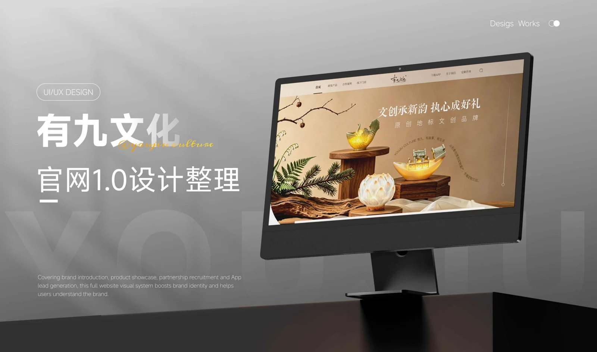
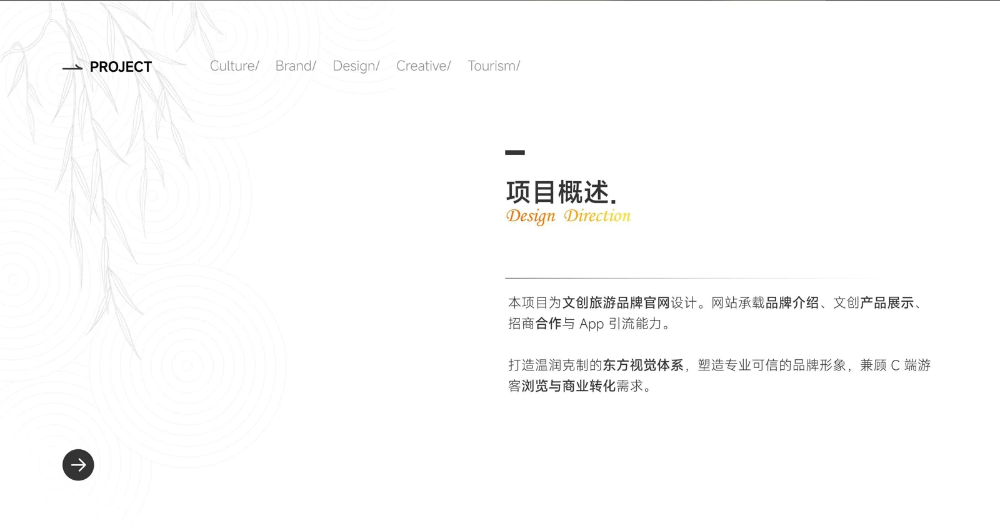
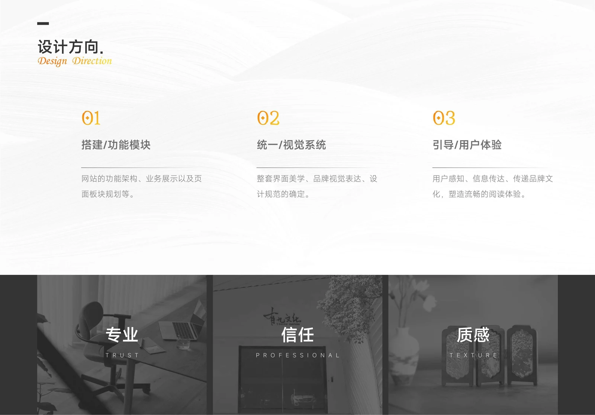
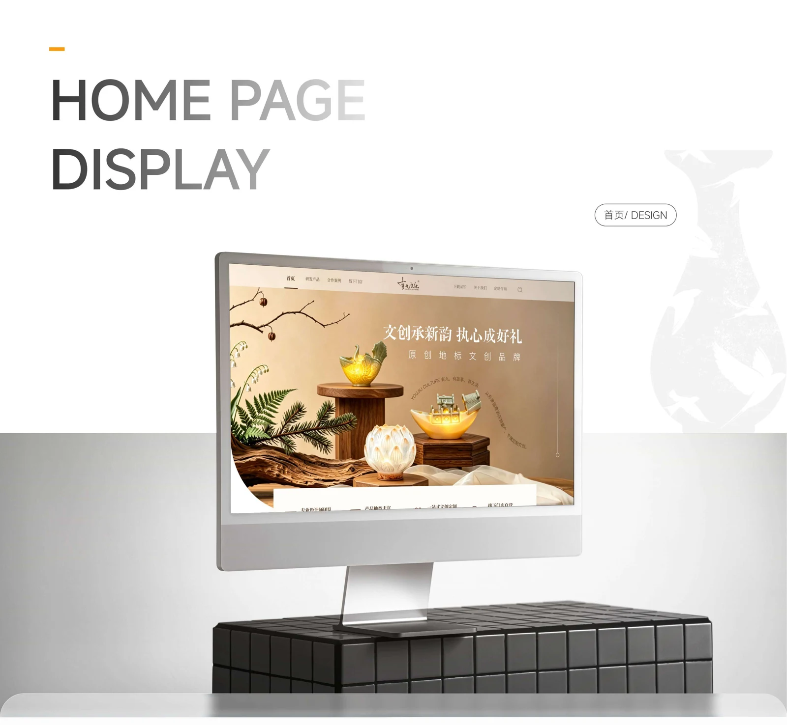
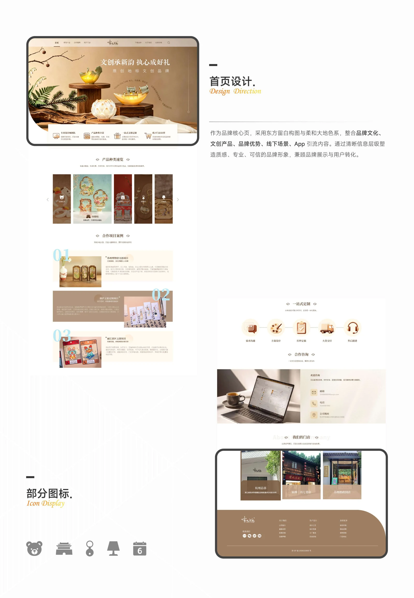
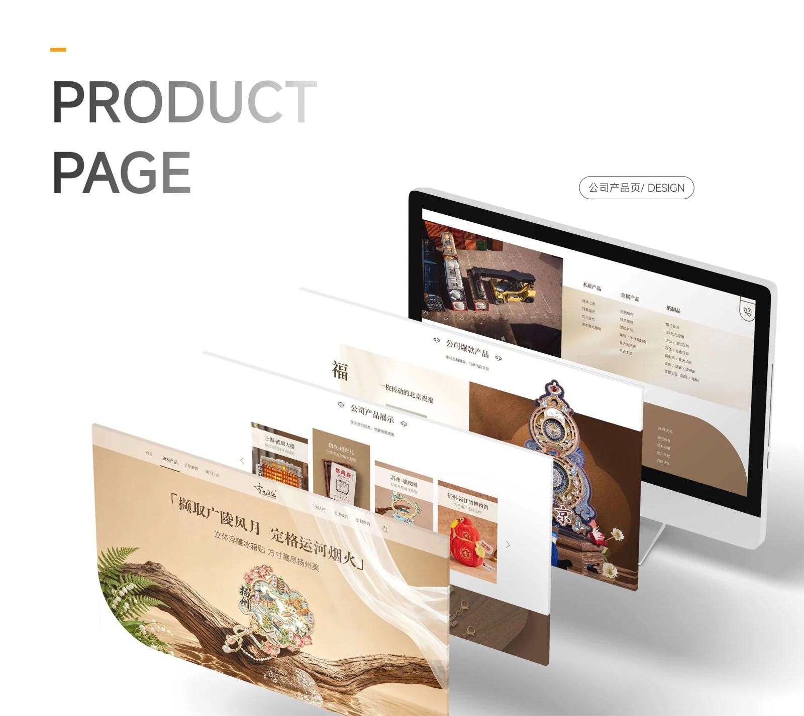
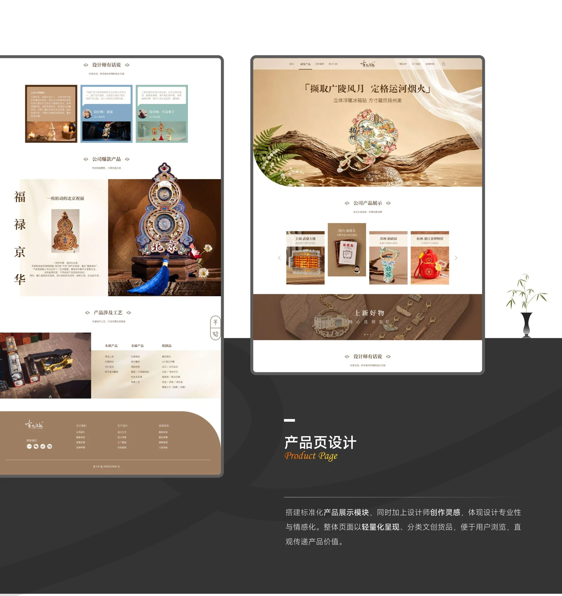
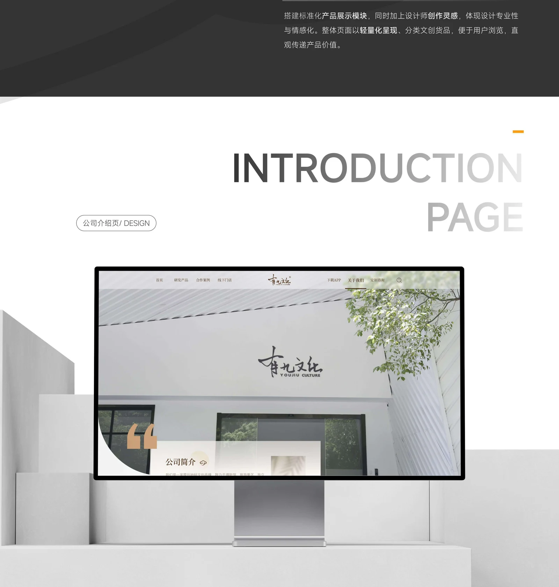
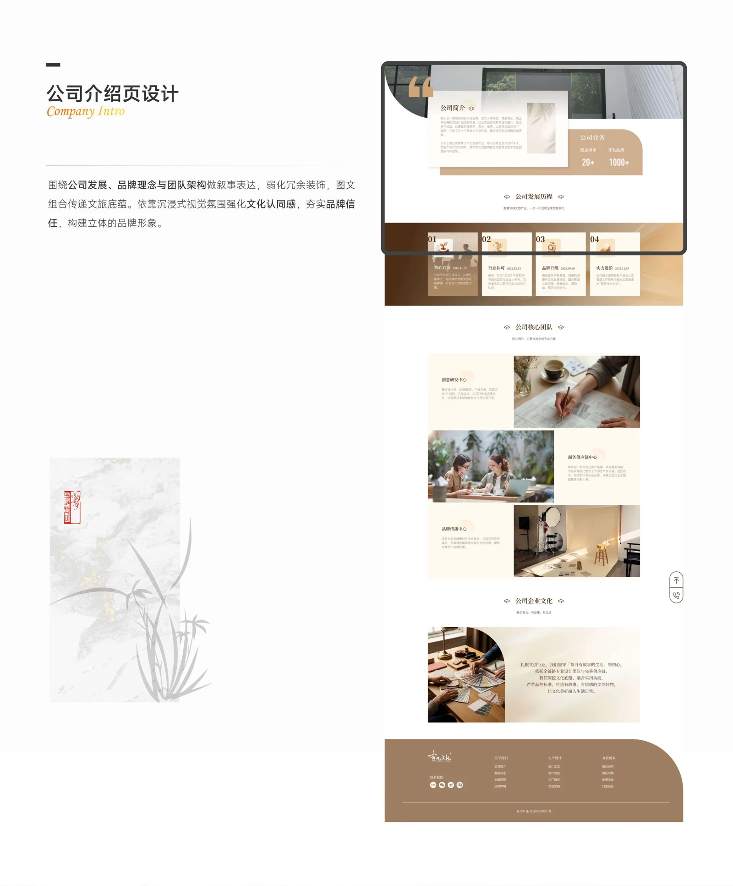
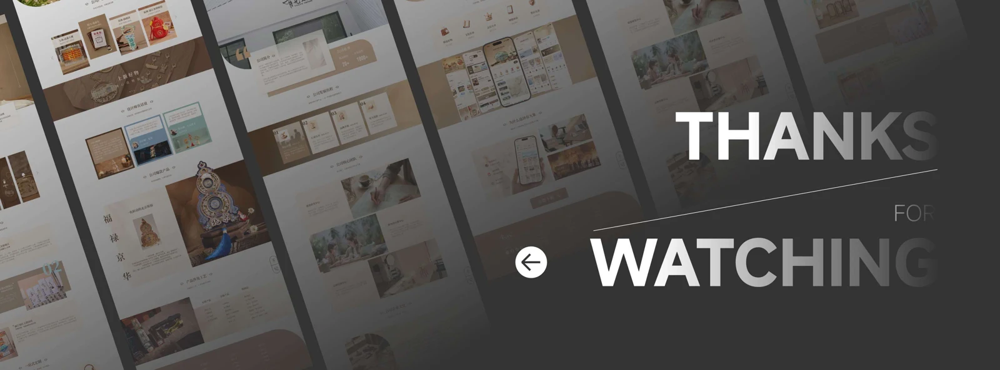

02 / BRAND WEBSITE
有九文化 · 品牌官网
主导官网 UI 设计，将品牌 VI 延伸至线上，完成首页、关于我们、产品中心、动态等核心页面，建立统一的品牌数字体验。










02 / BRAND WEBSITE
主导官网 UI 设计，将品牌 VI 延伸至线上，完成首页、关于我们、产品中心、动态等核心页面，建立统一的品牌数字体验。









